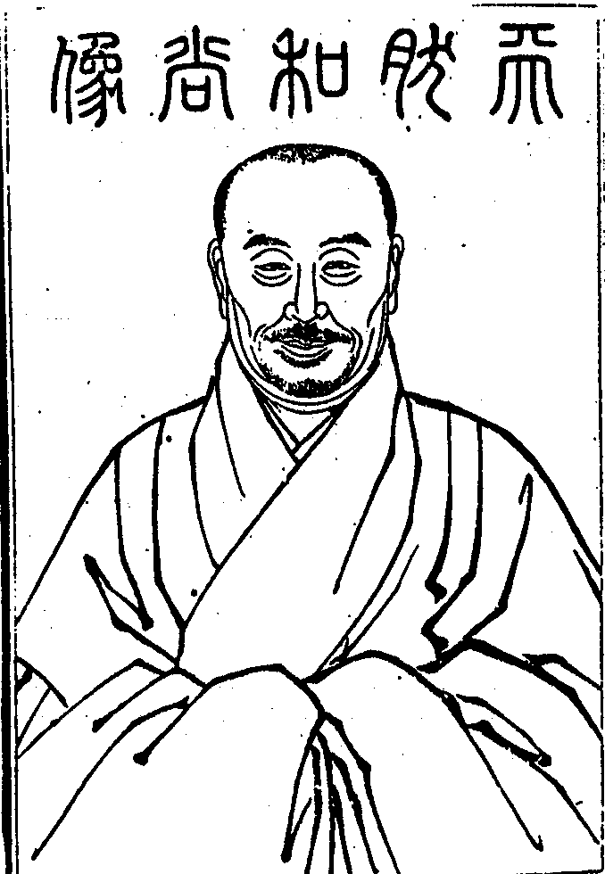

嘉興大藏經 第38冊
No.B406 廬山天然禪師語錄 (12卷)
【明 函昰說 今辯重編（依駒本印）】
第 1 卷
天然和尚像

五老峰頭。白雲萬頃。淨成樓閣。歸霞倒影。坐斷密移。振衣挈領。齊古德之獅紶。軼時賢之麈柄。誰堪智通。嗤減德而弗彰。獨抱閒情。擁孤光而自遠。砥柱洞流。楷模後學。此吾老人。南極一星。使人景仰而不可即者也。
嗣法門人今無敬題
天然是禪師語錄序
諸佛為一大事因緣出現於世。匪直自了。有大悲大願焉。悲大故其憂之也深。願大故其任之也重。昔風穴垂涕告首山曰。不幸臨濟之道至吾而將墜矣。誠憂之也。其後再傳而有汾陽。既放身命。閉關堅臥。郡守以名剎力致八請。不答僧契。聰者排闥讓之曰。佛法大事。靖退小節。風穴常憂。遇風則止。幸而有先師。今汝有力擔荷如來。此何時而欲高眠耶。汾陽瞿然起曰。非公不聞此言趣辦嚴吾行矣。誠任之也。函修因是而深嘆古今人之不相及也。道人撒手臥長空。菩提真如猶為垢膩。況復世間名聞利養。豈似今時把箇死蛇頭逢人便賣。痾漉漉地但知與兒乳酥。不問消與不消。此不過欲得門庭熱鬧耳。善知識以本分接人。其謂之何。我大師以大悲願力復來閻浮。橫挑楖栗。直入千峰。豈肯打入時流隊伍。去春攜修出匡廬。歷江南北。拄杖邊不曾撩著半箇。幾欲焚茅屋。入深山。偶以省覲歸僊城。一時道俗迎主訶林。乃翻然抱深憂而肩重任。師冷硬之性。壁立萬仞。莫可仰扳。百千妙義。到他跟前一棒粉碎。其所開示大要。貴人不著法報化。立處皆真。如擊塗毒鼓。聞者皆死。大矣哉無為寂滅之幢也。古人於此三二十年猶不奈何。而我師纔搭緇衣。便登祖位。人將謂此道直易易耳。亦知師之真參實證乎。師嘗究理而坐。十七晝夜不合眼。以為必識盡功忘。自然合他古轍。始得任心自在。後參黃巖。因閱華嚴。所得都亡。其絕情過量之智已於無量佛所培養。豈特三二十年而已。今法語具在。使天下後世知此百犬吠聲。群盲相引時。猶有人提唱斯事。佛祖慧命庶幾不斷。而後乃相安於無言。此師之志也。函修初曾認著露裸裸底。幾恁禍事。幸取決於師。得箇轉身。雖修與師皆從今華首和尚剃度。於法門為弟昆。然實受師資之益。知師者宜莫若修。故敢揭其大端如此。
崇禎壬午冬日同門弟子函修和南譔
天然是禪師語錄序
天然和尚以居士身夙慧頓發。了悟上乘。後從空隱老和尚剃度於廬山。證明大法。杖錫所經。悲愍之懷溢於言際。職書記者輯而成編。付諸剞劂。屬今轉恭為之序。夫轉固無能序而亦無可序也。憶丁亥秋。轉與龐子若雲迎和尚結期弼唐。將謂有言可循也。有法可得也。及參隨數月。始知日星雲漢。山嶽江河。以至竹影松聲。蟲鳴鳥語。盡為和尚筆舌。舍此而欲向一言一句之下承當箇事。何異撥波求水。然則是錄也又胡為乎來哉。夫大聖人出現於世。其中皆大有不獲已者。眾生日見道而不見。日聞道而不聞。是不有見。孰為不見。是不有聞。孰為不聞。而要所見何見。所聞何聞。應必悄然自得。亦復啞然自失。靈山會上拈花微笑。我佛世尊打頭一步蚤已逗漏不少。然畢竟何如心行。何如旨趣。必使千百世而下猶有跛腳翁堪解報恩。此世尊之為甘心。即我和尚之為甘心也。願天下後世得意忘言。見聞都盡。自度度他。共臻無上云爾。尚區區語句中求其罪過。且與謗法等。是則今轉所大懼也夫。是則閱斯錄者所大懼也夫。
順治戊子孟春門弟子今轉梁殿華稽首恭序
天然是禪師語錄序
昔者宣聖振鐸于東方。釋尊授衣于西土。一則意盡象中。一則心傳教外。其皇皇焉牖世覺民之心固異致而同歸也。自儒術既衰。微言遂絕。縉紳縫掖之輩高者攻于經學。卑者溺于文詞。而聖賢盡性知命之旨無復為之殫心矣。釋尊諸祖乃以單提直指之說示彼正覺。救此迷情。于是聰明奇特之士厭迂儒之拘牽。樂禪宗之超脫。一言契旨。片偈投機。而所謂儒門澹泊。收拾不住者。張無盡以為達人之論。深有以哉。始壇經刱著文字踵增。臨濟開玄要之宗。洞山立君臣之義。溈仰發體用之論。雲門捷示三關。法眼分呈六相。究其捨妄歸真。不離自性。夫是以從事誠明之學者如濂溪。嘗師鶴林姚江。借塗蔥嶺。不啻冥心而求之也。本師天然和尚夙領儒宗。久膺祖席。身乘五衍。心入三摩。譬如洪鐘萬石。有叩輒鳴。遙源千頃。無挹不注。向在雷峰棲賢華首訶林諸山皆有語錄行世。學人奉為津筏。寶若琬琰矣。迺者山靈初啟。叢席旋興。西堂澹公因南陽之舊基。開東林之新剎。秖園翬建。緇侶雲臻爰從。丙午冬仲奉本師以居焉。師則性樂巖阿。心悲塵剎。既得棲真之境。益弘樂育之懷。或策杖而陵峰。或披襟而笑月。蒼松白雪。歲見新篇。紫玉青螺。時聞佳什。蓋已目擊道存無行不與矣。然而钁頭斧子不廢鉗錘。擊碓敲床更勤提命。山中高弟以師法語彙錄成編。命小子楷敘而梓之。余惟儒門淆雜。特闢禪關。若悟本來。同歸覺路。而師先得淵源于孔孟。繼聞秘密于迦文。固知六通八正不同幻妄之談。窗影風幡無取尖新之解也。余嘗再訪檀林。一瞻猊座。見其登堂之彥。濟濟趨蹌。入室之英。雍雍問辯。雖杏壇講習遜此威嚴。沂水詠歌同斯怡悅矣。是錄也推原心性。利濟人天。有以佐吾儒道德齊禮之所不及。公之諸方垂之奕葉。將使慧日同光。名山並壽。海螺巖下永振威音。錦石溪邊長流法乳。豈徒拾拄杖之陳言。資曲床之談柄已耶。若夫佛法深微。不從解入。自非立雪數年未易領會。又何敢于威儀談說之間管窺而蠡測也。
康熙庚戌上元當湖弟子陸世楷今亙和南謹撰
天然是禪師語錄總目
天然是禪師語錄卷第一
上堂
崇禎壬午住廣州訶林。上堂。師拈香祝聖畢。復拈香云。此一瓣香天日覆而不知高。地日載而不知厚。舉起則耀古騰今。放下則傾湫倒嶽。在山僧手裏以無名示人天目前而爍破。爇向爐中耑申供養見住羅浮華首臺堂上空隱獨和尚用酬法乳之恩。遂就座。問荅別錄。乃云。盡大地是我人安居之場。盡日月歲時是我人安居之候。從朝至暮。穿衣喫飯。掃地燒香。搬柴運水。迎賓待客。乃至普天之下。四民作息。百務繁興。盡是我人安居之事。方寸之內。是非生滅。昏沈掉舉。散亂禪寂。盡是我人安居之心。然既如此。還有甚麼制可結。諸兄弟。事不得一向在佛法上。須有箇宣揚底時節。在諸人本分事上也有箇緣起底時節。山僧承諸大居士大耆德請住此院。今日為諸兄弟結制。事不獲已。聊赴箇時節。願諸兄弟慎勿錯過。驀豎拂子云。大眾。還會麼。若在者裏得箇入路。不妨慚愧。昔日六祖大師受黃梅衣缽。隱獵人隊中十六年。念時節將至。纔至此地。一日行兩廡間。見兩僧爭論。一曰風動。一曰旛動。諸兄弟。爾看者兩箇僧。何等天然。何等妙用。正恁麼時。爾要增減他一毫得麼。爾要疑擬他一毫得麼。叵耐他自己不知不覺。所以六祖大師事不獲已。纔向他道。不是風動。不是旛動。雖則把住去路。硬按牛頭。其實也是平地起波濤。若是皮下有血。一聞便醒。正好慚愧從前。何須更待六祖大師云仁者心動。雖是和盤托出。點簡將來。猶是缽盂安柄。爾若於此窺得破。不但歷代祖師瞞爾不得。即黃面老子也要瞞爾不得。當時四十九年橫說豎說。猶沒者箇消息。事不獲已。纔向百萬人天中拈青蓮花。已是逗漏不少。何況又道。吾有正法眼藏。涅槃妙心。付與摩訶迦葉。爭怪後代兒孫認指為月。若是大聰慧人。決不入他群隊。為甚麼如此。祇為向上原沒恁麼事。亦沒有恁麼說。今日山僧與爾諸人說破。事不獲已。隨邪打正。若有伶俐衲僧攔胸把住。問教口啞。亦是山僧招得。有麼。有麼。如無。山僧自起還合自倒去也。喝一喝云。今日結制。大眾珍重。下座。
解制。上堂。九十日以前諸人從甚麼處來。九十日以後諸人向甚麼處去。正當九十日。前後來去俱成戲論。且問諸人。即今在甚麼處安身立命。時有僧出問云。日落西山事若何。師卓拄杖一卓。進云。四大分張時。在何處安身立命。師以拄杖橫一橫。進云。某甲不識。師云。大好箇不識。僧禮拜歸眾。師乃云。要知者僧不識處。正是諸人安身立命處。汝若會得。前此無結制者。後此無解制者。目前無聽法者。此間無說法者。若能如是。山僧不妨與汝諸人結制。不妨與汝諸人解制。於本無生死中說有生死。於現有生死中說無生死。主賓互換。棒喝交馳。豈更有第二箇時節。驀豎拂子云。舉一不得舉二。放過一著。落在第二。諸兄弟。爾若喚作第一。蚤已落第二了也。爾若喚作第二。不可更有第一。汝若總不與麼。猶是顢頇佛性。儱侗真如。畢竟作麼生。擲下拂子云。蘇嚕蘇嚕[口*悉]哩[口*悉]哩。
上堂。山僧昨夜偶得一夢。夢見一夥賊。彼時慌忙得狠。忽然醒來。元是老鼠咬樓板。今日普告大眾通知。便歸方丈。
上堂。圓明了徹。猶落今時。聞見俱捐。且居意地。隨流得妙。勉強主張。總不與麼。頭角生也。大眾。須有脫身法始得。
上堂。心不憶玄旨。口不經玄談。行不入凡聖之稠。情不附生死之業。如斯造詣已難其人。何況拋磚打瓦。作浪興波。撥亂乾坤。掀翻黑白。汝若從之。得毋累乎。儻其疑焉。祇成自錯。山僧到此啞而不言。時節若來。諸人自委。何以故難言。紅爐一點容易銷鎔。須信百煉精金始無變色。理解之與證悟。似同不同。見到之與行到。一徹永徹。稍存等待。便非此宗。立地圓成。猶為鈍漢。豈將魚目遂作明珠。若是真人。自知決擇。
上堂。我有一句子。久未向人道。今日厚顏。耑為大眾。良久云。三千里外。逢人不得錯舉。
上堂。分明萬事雪填井。又且婆和祇恁行。不是眼開同作夢。都緣露柱證無生。露柱既證無生。山僧及大眾合作麼生。參。參。
上堂。心不自心。因契道以名心。道不自道。因無心以名道。所以道絕玄微。心無體量。若言有道有心。猶是把箸拈匙見識。若言無心無道。依然靈龜曳尾之機。明暗掀翻。非其境界。同時殺活。豈是全提。纔到龍門。已遭點額。汝等諸人幸自好看。
上堂。世尊拈花是一出好戲。列代祖師拈椎豎拂。橫說直說。是一幅古畫。幸自我者裏總無如是窠臼。便歸方丈。
上堂。舉古德問僧云。何不看經。僧云。不識字。德云。何不問人。僧展兩手云。是甚麼字。德無對。師曰。你看者箇古德。到處勸人看經。到處勸人問字。分明一箇八字他也不識。山僧亦有一箇字要問諸人。遂豎起拳云。諸人還識麼。會書不擇筆。點點是黃庭。
戊子九月再住訶林。上堂。驀豎拂子。召大眾云。還會麼。放下拂子云。真心無揀。大道非遮。體絕見聞而不離見聞之緣。用同聲色而不是聲色之事。如虫禦木。文彩偶彰。對鏡看花。心口俱喪。所以掩室摩竭。杜口毘耶。固非玄妙之機。豈墮功勳之位。山僧六年以前一場敗闕。已甘荒山匿影。破衲蒙頭。乃承諸當道。諸鄉紳。護法檀越。長者居士。寺中禪衲。方外高流。迫索再三。苦辭不可。只得俯順時機。復陞此座。若論向上一門。不可畫蛇添足。須知千差無別。何妨作浪興波。一塵立而國家鼎盛。萬機休而千聖不攜。放開捏聚。惟我能知。殺活縱橫。非凡可測。一切處變易不得。何勞掘地出空。未生前面目儼然。不用續鳧截鶴。理貴從來。事由今日。未明八法。枉自楷模。已協宮商。別諧音律。喝一喝。卓拄杖下座。
結制。上堂。年年三百六十日不曾動著毫釐。今日無端截取九十日為汝諸人開爐結制。承郝范兩大護法設供。請山僧登座說法。貴圖汝諸人直下明取者九十日底道理。爾若明得九十日底道理。從無始來至于今日。總是者箇道理。又從今日盡未來際也是者箇道理。明得也是者箇道理。明不得也是者箇道理。既明得明不得總是者箇道理。山僧今日又作麼生。良久云。不因紫陌花開蚤。爭得黃鶯下柳條。卓拄杖一下。復舉陸亙大夫向南泉云。肇法師也大奇特。解道天地同根。萬物一體。南泉指庭前牡丹花云。大夫。時人見此一株花。如夢相似。若是訶林則不然。儻有人問。肇法師也大奇特。解道天地同根。萬物一體。為向伊道。白雲常在戶。青靄數當峰。且道與南泉相去多少。
上堂。今日長至在處叢林熱鬧。打普齋。散嚫施。吹法螺。擊法鼓。請堂頭老漢說箇應時及節底佛法。惟我者裏冷啾啾地。只有一箇栗棘蓬拋向諸人面前。一任諸人吞吐。山僧且問諸人。吞底是。吐底是。不吞不吐底是。若道吞底是。還我栗棘蓬來。若道吐底是。爭奈目前何。不吞不吐。咽殺闍黎。總不與麼。辜負佳節。作麼生。速道。速道。
上堂。戊子臘月八日。寺中耆舊設供。請山僧上堂。要為大眾舉揚世尊睹明星那一則陳腐公案。大眾。如今那一箇不夜夜睹。何曾少箇什麼。為甚總在迷裏。就如世尊當日。何曾多箇什麼。為甚卻悟。故知此事大有因緣時節。時節若至。其理自彰。在世尊分上。雖是自彰底時節。其如祖宗門下。正好喫棒。且道差別在甚麼處。驀豎拄杖云。只為拄杖子不甘。所以三千年後帶累山僧。人天眾前不免說破。喝一喝云。向下文長。付在來日。下座。
解制。上堂。一期之內。諸人還構得也無。構得也三十棒。構不得也三十棒。諸人作麼生。你若腦後無眼。直饒喝乾滄海。棒倒須彌。猶是硬作主張。茫茫業識。所以道末後一句。始透牢關。把住要津。不通凡聖。若到此間。山僧也須喫棒。只是無人下手。眾中還有下手底麼。有僧出。纔禮拜。師云。伏惟珍重。下座。
浴佛。上堂。驀豎拄杖云。釋迦老子生也。生也。諸人在甚麼處見得。汝若見得也好三十棒。汝若不見得也好三十棒。且作麼生。昔雲門大師雖則擒賊先擒王。殊不知消息一漏。遍地荊棘。帶累山僧一條熱棒橫搠豎搠。左搠右搠。搠到天明。依舊可憐生。擲下拄杖云。維那。今日不得普請。
住雷峰。上堂。境不可離。心不可見。照不及地。寂不通方。凡外二乘。迷外覓悟。三賢十地。悟了還迷。體妙難思。情忘自合。諸有智者。咸推此宗。初入門來。須知藥忌。
上堂。舉僧問投子。如何是十身調御。投子下繩床立。又問。凡聖相去多少。投子亦下繩床立。雲門有偈曰。投子下繩床。今朝為舉揚。驢前馬後漢。切忌錯承當。師云。雷峰亦有一偈。驢前馬後今皆是。縱不承當也枉然。祇為雲門曾道破。雷峰不免費重拈。且道雷峰意旨與雲門有優劣也無。良久云。祇因為客久。回首話偏長。
上堂。喚作拂子則孤負山僧。不喚作拂子則孤負大眾。孤負山僧即今向大眾說過。孤負大眾山僧祇得噤口。早晚隨大眾拖出拖入。咦。露柱不解鐙籠意。一夜癡呆立到明。
上堂。徹底凡夫日用中。河沙諸佛共無窮。剎那欻爾千差起。夢裏徒勞說異同。大眾且道。即今是夢不是夢。祇知貪程。不覺蹉路。不蹉路。不許夜行。投明須到。驀豎拂子云。投子大師來也。多少人在者裏死活不得。喝一喝。
上堂。不是麻三觔。分明乾矢橛。打殺鱉鼻蛇。放出摩天鶻。趙州勘破婆子。威獰如虎。為什麼被劉鐵磨一錐便倒。何似我老博山密移一步。祇如雷峰又作麼生。鴨腳木不鴨腳木。遂鼓掌云。料掉沒交涉。
上堂。中秋又到。皓魄重輝。雲散長空。影同滄海。山河景仰。童叟懽呼。以兩手作圓相云。祇各人分上。者一箇為什麼略不著眼。復以手拋向後云。一回心目分明極。萬古清光錯過多。為什麼分明又道錯過。莫將水中便當天上。遂高聲喚大眾云。可惜許。
上堂。豎拂子云。盡大地四聖六凡總要出者箇不得。祇是不許覷著。覷著即禍事生。不覷著跛鱉盲龜一時拽脫。十字街頭逢觀音。三家村裏趁彌勒。一聲社鼓喧天。卻原來白廟前大王慶節。遂拍手云。呵呵呵。沒交涉。
上堂。豎拂子云。人人盡有者箇消息。為什麼不會。雖然不會。三世諸佛亦祇得噤口縮項。讓他出一頭地。祇是他奈何不得。及乎奈何得。又不相似。汝諸人作麼生折合。以拂子書空作旵字云。若無增上慢。人方便有分。
上堂。一從攪動干戈後。戡定中原匪太平。回憶桑麻雞犬日。十分難復舊時情。大眾。舊時情作麼生。以拂子拂一拂。復左右顧云。若將容易得。定作現成看。
上堂。古人道。在眼曰見。在耳曰聞。在鼻嗅香。在口談論。在手執持。在足運奔。識者知是佛性。不識喚作精魂。華首云。識者喚作精魂。不識卻是佛性。若雷峰則不然。識與不識。總是精魂。為什麼如此。我王庫內。無如是刀。
上堂。舉法眼捲簾話。乃云。法眼指簾。逐鹿不見山。全身入荒草。二僧捲簾。雖則不奈何。佛眼也難睹。法眼云。一得一失。便是老婆心切。要且眉毛安在。若在雷峰門下。總用不著。喝一喝云。多少人要定當者一喝不得。
自恣。上堂。道無所得。惟有寡過。我世尊在然燈佛所無有少法可得。故號大覺能仁。六祖大師云。但能見已過。即與道相當。後代善知識亦云。兄弟東去西去。直須向萬里無寸草處去。驀豎拂子云。識得拂子。三大老性命在者裏橫拖直拽。放下拂子云。更有一般奇特事。梧桐一葉下秋庭。
長至。上堂。豎拂子云。是陰是陽。作麼說箇來復底道理。放下拂子云。一回夢覺渾忘卻。始解今年是去年。
臘八。上堂。睹星始覺從來舊。萬里雲霄信步歸。難忘熟處成孤負。爭怪雷峰別有機。驀豎拂子云。安得不孤負。
上堂。世尊拈青蓮花。歷代祖師。天下老和尚豎拂子。喚作拈花豎拂入地獄如箭射。不喚作拈花豎拂入地獄如箭射。驀豎拂子云。多少人在者裏放過不得。
上堂。山僧平常東邊上。西邊下。與諸人道什麼。如今到者裏又作麼生。雖然。已被人點簡不少。
上堂。明明開眼見著。側耳聽著。滿口道著。為什麼不會。汝若會。勘破天下老古錐。汝若不會。天下老古錐猶較一籌在。且道那一籌。參。
上堂。大道不曾離。寒山霜滿枝。特地尋言語。回頭錯過伊。既已錯過。又道不離。謂是究竟。卻成解嘲。簡點將來。放過不可。諸人且作麼生。復左右顧視良久。
住廬山棲賢。上堂。師云。上下和平。古今一致。是非共轍。生死同條。正是白雲萬里。豈況更多行腳。上士貴在明宗。汗馬功高。終非王種。
上堂。左右顧云。便與麼去。過在諸人。不與麼去。過在山僧。過在諸人是山僧境界。山僧不知。過在山僧是諸人境界。諸人不覺。山僧境界即在諸人面前。諸人境界卻在山僧背後。恁麼會去。許汝具超方眼。若論向上。猶較一線道在。
元旦。上堂。昨夜三更。獅子點頭驚起。袈裟嶺一腳踢翻。震動山谷。哮吼林木。各與三十棒。發還本處。不許動著。普告大眾。今日元旦。且當蓋覆著。勿使外人聞此怪事。
上堂。囫圇一句。非智所知。知亦不得。得亦不真。不到情盡理窮。安知休咎。所以從上諸祖唯有默契。三腳驢子自解弄蹄。六耳獼猴非人能辨。直得木馬追風。千里匪疾。泥牛飲海。全渤須乾。無量義海。百千妙門。現前具足。眨眼錯過。曠劫難逢。
上堂。在處現前。不能安住。常隨背後。必欲追尋。即使信手拈來。何似埋頭向去。命根不斷。差別難蠲。儻遇其人。不消一拶。
上堂。文殊競發千波。普賢晴空一亙。晴空之競發而不紛。千波之一亙而匪寂。始信二人同心。其利斷金。同心之言。其臭如蘭。且道是甚麼人境界。
上堂。斷惑證真。水中撈月。安禪入定。空裏栽花。忘見守知。曹谿斥為不解方便。夜鐘潭月。玄沙謂之生死岸頭。過此以往。不許汝知。動靜顯藏。當名何等。
上堂。窮諸玄辯。若一毫置於太虛。竭世樞機。似一滴投於巨壑。諸人還知周金剛當時安身立命處麼。不可總在黑地裏坐。紅日下山燒海底。白猿歸洞嘯峰深。
臘八。上堂。能睹是人。所睹是境。若說因睹會心。附物顯理。黃面老子煞要買草鞋行腳始得。既不如是。當年睹明星悟箇甚麼。霜白滿天清較雪。日黃鋪地晃如金。蓬頭抱膝何曾徹。一碗香麋飽到今。你看數百千祀俗氣猶未除在。
繼住羅浮華首。上堂。先師開法此地二十餘年。幢旛指處。龍象駢臻。所蒙椎拂記莂。祇是山僧與千山。去年千山報寂。今年先師又見背。藐爾一身。肩此重擔。茲承護法宰官。暨各山耆年大衲屬山僧繼主此山。念先師根本重地。遞代相承。不可無統。今日陞座。普告大眾。且道合談何事。豎拂子云。是博山底。是先師底。是山僧底。若道三祇是箇拂子。若道一分明博山傳先師。先師傳山僧。大眾。是三非三。是一非一。把定乾坤一句作麼生道。以拂子作〦相云。曹溪一滴無今古。華首長空自暗明。喝一喝。卓拄杖下座。
上堂。悟到十分。行到十分。始知不曾動著祖翁田地。雖然如是。猶是田庫翁見識。何以故。不見道。千年田。八百主。
上堂。舉六祖大師偈云。本從化身生淨性。淨性常在化身中。性使化身行正道。當來圓滿真無窮。師云。大眾。即今語底默底是化身。動底靜底是化身。那箇是淨性。又作麼行正道。良久云。適來是什麼乾矢橛。切忌作語默動靜商量。不商量。金井潭邊古石梁。
上堂。舉僧問趙州。學人乍入叢林。乞師指示。州云。食粥了也未。僧云。食粥了。州云。洗缽盂去。其僧大悟。師雷者也是平常人事。我問你荅。悟在那裏。尋常佛殿裏。僧堂前。廚庫三門。汝諸人茫然處。即諸佛悄然處。且道茫然底受錐劄。悄然底受錐劄。待汝緇素得出。鷂子過新羅。
繼住海幢。上堂。海幢剎竿。先師豎未久。忽爾倒卻。今日承諸護法暨各山諸上座請山僧繼主此席。山僧特來了先師未了公案。且道先師有什麼未了公案。目前殿宇待新。堂寮待備。百廢待舉。豈不是先師未了底事。緇白諸公。深淺大小。機感隨時。豈不是先師未了底人。驀豎拄杖云。祇如者箇有什麼不了。大眾。乾坤上下。山川流峙。世運興衰。人事得失。從上來有什麼道處。無端指註。全是全不是。全提半提。還當得宗乘事麼。今日不免為先師當眾說過。卓拄杖。
上堂。豎竹篦子云。與麼自救有分。若論宗門下事未夢見在。然古人往往以此示人。教你與麼悟。不是便與麼去。到者裏伶俐始得。今時具者箇眼。不道全無。祇是少。汝諸人參學一番。大須皂白。毫釐有差。過重山嶽。
上堂。臨濟下克符道者嘗有偈云。儂家住處豈堪隈。炭裏藏身幾萬回。不觸波瀾招慶月。動人雲雨鼓山雷。甘露滅謂與价祖五位君臣折合。還歸炭裏坐同一旨趣。非苟然者。後代兒孫競以臨濟洞上互相低昂。真可一笑。海幢也有一偈。與諸人助參。一句當塗絕古今。門門有路莫沈吟。烏雞久在煤山裏。祇要渠儂鐵石心。
上堂。此事如夢得覺。如久病得良醫。如重霧日初出。如在巨浸中得筏。如夜行中塗獲炬。如叢人中認得所生父母。實實有與麼事。不是道理思量所詣。到得與麼猶是一期之說。須知更有亙古亙今一句。良久。大眾禮拜起。首座出眾云。者一句不是亙古亙今。師以竹篦子擲案座。便退。
上堂。祇麼是法身邊。與麼是法身向上。者箇是雲門三句。臨濟三玄。那箇是洞上五位。溈仰三生。法眼根境。一一打合得圓滿無滲漏。正是病深。不可救藥。大死一回。卻活轉來。始知三頭八臂。神出鬼沒。是什麼閒事。驀豎竹篦子云。病也。病也。還掙扎得出麼。就者裏大有奮迅三昧。祇是不許人知。以竹篦子擊案。
上堂。豎竹篦子云。有什麼指示。祇是你不肯承當。大須知有從上立地處。莫祇向迦葉門下淹沒。咦。者箇眼如優缽曇華。此宗安得不濫。
浴佛。上堂。未離兜率。已降王宮。未出母胎。度人已畢。且道淨飯王宮中果有悉達太子麼。當時睹史多天又什麼人說法。作麼生說箇未離已降底道理。卓拄杖一下云。此非你諸人明得底。不如禮拜了退。
繼住芥菴。結夏。上堂。九十日待汝構取。且構取箇什麼。古人云。護生須用殺。殺盡始安居。豎竹篦子云。者箇作麼生殺。以竹篦擊案云。若不揮劍。漁父棲巢。
上堂。無身有事超岐路。無事無身落始終。大眾。作麼生是無身。豎竹篦子云。莫向者箇會。作麼生是有事。不可總無者箇。然雖如是。是什麼熱碗鳴聲。便擲下竹篦子。
上堂。一拳拳倒黃鶴樓。一等拳頭。祗是勞而無功。一踢踢翻鸚鵡洲。大好腳尖。不知退步。有意氣時添意氣。也是虛張。不風流處也風流。面毛長三尺。大眾。批判便批判了也。若是芥菴又作麼生。良久云。四卷楞伽遮老眼。一聲彌勒到新秋。
上堂。南泉斬貓。歸宗斬蛇。喚作斬貓斬蛇。入地獄如箭射。不喚作斬貓斬蛇。入地獄如箭射。畢竟合作麼生。豎竹篦子云。竹篦子還入地獄也無。險。
師誕日。上堂。任性出興非一異。但隨方便說緣生。饒君高具摩醯眼。不許當途涉謂情。大眾。既不許涉謂情。即今事作麼生。
上堂。盡大地在烜赫虛空裏。總無一箇知恩。設有知恩。不免旁觀竊笑。且道解笑者是什麼人。以竹篦子指露柱云。大眾。莫輕覷他。
上堂。一四七。臘月梅花寒徹骨。七四一。海底燈籠光蔽日。一種風流兩處看。閒殺東村王二十。呵呵呵。有利無利。不離行市。
除夕。上堂。世間做年。多用水牯牛。芥菴亦有一頭。要與諸人度歲。祇是老漢不解宰割。且請大眾著力。豎竹篦子云。宰割一任宰割。但不許傷他皮骨。汝作麼生下手。若下手不得。莫道芥菴澹薄。
上堂。豎竹篦子云。者箇決定不從蔥嶺將來。為什麼達磨祖師未航海以前并無人道著。既航海後還有助揚底道理麼。放下竹篦子云。啞子喫黃蓮。又云。三觔麻。一疋布。良久云。咦。有什麼交涉。
住丹霞。上堂。天然自是住丹霞。今古殊同驗作家。遠岫千層朝座直。平江百里繞門斜。大眾。還鑑賞麼。若乃鑑賞。不妨入得丹霞門。升得丹霞堂。大眾即是山僧。山僧卻不是大眾。其或未然。日日丹霞同門出入。同堂上下。山僧即是大眾。大眾且不是山僧。與麼舉揚。猶是門庭施設。山僧三十年笑具且從今日止。須知深山裏更有好商量麼。帶霧鋤雲去。穿蘿擔月回。卓拄杖一下。
元旦。上堂。元正啟祚。萬象咸新。山川新。草木新。氣運新。人事新。且道拄杖子還有新舊也無。若無舊。安得有今日。若無新。今日相見底豈不是。大眾。祇如新舊不到一句又作麼生。豎拄杖云。山僧年邁。離伊一步不得。
浴佛。上堂。一切法不生。一切法不滅。隨緣現世間。如鏡花水月。當生實不生。當滅何曾滅。靈山尚儼然。丹霞如是說。驀豎拄杖云。大眾還見麼。如來世尊在汝諸人面門出入。為什麼如聾似盲。今日復在丹霞拄杖頭與汝諸人相見。未證據者請看。復卓拄杖云。大眾還聞麼。既聞矣。更不聞。既見矣。更不見。見聞如空華。萬法了一電。突出大好山。滿目難分辨。更擬問如何。惡水當頭濺。喝一喝。
上堂。去年雷峰夏九十。今夏丹霞一百二。一任諸人顛倒顛。跳不出雲門乾矢橛。乾矢橛。棒頭有眼明如日。打得著驪龍拗角折。打不著木馬追風疾。
上堂。一二三。四五六。水邊林下。千足萬足。一回喫撲。青黃赤綠。切忌撞著孟八郎。打你驢頭嚗嚗。何以故。黑漆盤裏。不分麥菽。
長至。上堂。內含陽曜。外積陰霾。仁智見同。百姓日用。天地蔽塞。元氣潛藏。人事希夷。萬機休謝。大眾安住。正在此時。一念瞥興。轉見淆亂。
上堂。卓拄杖。左右顧云。元是舊年人。卻看新曆日。曆日年年新。儂渠刻刻故。既刻刻故。為什麼總向新年新月新日裏相見。一輪紅曜安知歲。鏡裏森羅不是空。
上堂。維摩居士入不二法門。東坡嘗有頌云。譬之蠟炬作鐙燭。不以火點終不明。迺至維摩嘿然處。三十二說皆光燄。妙喜老人謂其筆端有口。善說法要。老僧看將起來。也只是隨邪。東坡祇肯維摩嘿然處。殊不知三十二說總是火。各各光燄不相假借。丹霞今日亦有一頌。譬之丹霞竹坡竹。千竿萬竿高凌虛。昨夜一竿風吹折。以尺量來五丈餘。且道與古人相去多少。
師誕日。上堂。一切人有二種想。一世諦流布想。二倒想。一切聖人有世諦流布想而無倒想。我丹霞老僧隨世諦流布。說今年六十有一。說今日十月十四。內外諸公隨世諦流布。都來與老僧慶生。老僧亦隨世諦流布受於供養禮拜。是老僧與諸公總在世諦中。還有第一義諦麼。若有世諦而無第一義諦。是凡夫法。若舍世諦別有第一義諦。是聲聞法。若即世諦即第一義諦。是菩薩法。若就目前不是世諦。亦非第一義諦。任心所擬。隨緣即宗。無有是非。亦無無是非之量。是如來法。我衲僧家又作麼生。卓拄杖一下云。大眾。會麼。老僧六十一年前祇與麼來。即今亦祇與麼。盡未來際亦祇與麼。若在者裏構得。不妨與四聖六凡同入老僧無量壽海。目前無有諸人。此間亦無老僧。縱目所視。縱耳所聽。縱口所說。不知誰之所為。而佛事周圓。法音普遍。且道是甚麼人境界。歲歲高山青突兀。年年流水綠潺湲。
浴佛日。上堂。好好箇太平世界。無端撞入淨飯王宮。大怪小驚。當時建立。且道建立得箇什麼。後來韶陽老子極力推倒。且道推倒得箇什麼。都來丹霞手裏一捏粉碎。會麼。不識赤鬚鬍。依然鬍鬚赤。卓拄杖。
住歸宗。上堂。剎竿依舊。毒鼓從新。祖令親行。魔外潛息。然燈身前。不容擬議。迦葉門下。許有激揚。一句根由。當眾決擇。問荅畢。云。天清地寧。江深嶽峙。風動雲起。晝朗夜昏。聖主垂衣。良臣補袞。四民浩浩。百氏騰騰。現成公案。還有指示也無。若無指示。老僧堪作甚麼。若有指示。大眾何曾具足。所以遇賤即貴。寶几珍御。豈是元無。遇貴即賤。白牯狸奴。應非別有。揖搦並用。貴在當機。從上真宗。祇言仍舊。恁麼也不得。不恁麼也不得。恁麼不恁麼總不得。石頭極口在仍舊上猶為指蹤極則之談。我有時教伊揚眉瞬目。有時不教伊揚眉瞬目。有時道揚眉瞬目者是。揚眉瞬目者不是。馬祖用盡氣力亦不過在仍舊上虛縱虛奪。臨濟得大愚點破。始解未到黃檗時消息。俱胝得天龍一指。受用平生。末後在童子指頭上施全殺手段。顯全活風猷。亦不過在仍舊上善為去就。始知直下承當。錯過不少。翻身跳出。轉見無端。直饒三頭八臂。鼻直眉橫。到者裏總要喫歸宗痛棒始得。且道歸宗又作麼生。卓拄杖云。將此身心奉塵剎。是則名為報佛恩。下座。
上堂。正月已過。二月初來。諸人箇箇委悉。惟有拄杖子總沒分曉。且道委悉底是。沒分曉底是。全是全不是。卓拄杖云。道士帔白襴。知非真措大。
上堂。舉破灶墮云。鏡凹照人瘦。鏡凸照人肥。不如打破鏡。還我舊面皮。師云。大眾。如何是鏡現山河大地者。如何是人山河大地。且道鏡作麼生打破。面皮作麼生還舊。卓拄杖一下云。會麼。霜天月落夜將半。誰共澄潭照影寒。
上堂。歸宗斬蛇。若作舉鋤下鋤會。大似釘樁搖櫓。若作一斬兩斷會。大似劈破虛空。不可但道箇南斗七。北斗八。便當得。既當不得。合作麼生。
上堂。文殊三處過夏。有一句子要人信。迦葉欲行正令。有一句子要人疑。疑句即信句。信句即疑句。疑信裏錯過。疑信裏薦取。呵呵呵。日出眾峰青。雲深不知處。
上堂。端陽到來了。文殊普賢觀音在拄杖頭諍論佛法。各持一說。如鬥快龍舟相似。汝諸人為老僧捉下。有功者賞。有過者誅。咦。總是有過。且作麼生誅。喝一喝云。狗銜赦書。諸侯避路。
上堂。譬如明鏡現眾色。像像不入鏡裏。鏡不到像邊而森羅宛然。空明自爾。到者裏須知數點平田白。千株東嶺青。豈不是諸人分上。黃鶴樓詩猶未輪到你題在。
上堂。舉百丈野狐因緣。師云。不落天上月。不昧庭前花。花月不相到。分明在目前。在目前。移床就月共花眠。還會麼。不會明日普請。與大眾再說一過。
上堂。盡十方三世都來是箇無孔鐵鎚。用得便用。沒更絲毫頭與你為緣為對。若要覓箇縫兒有所牽挽。大似日下孤燈。添得多少光燄。不如當下撲滅。豈不痛快。卓拄杖一下云。快。快。
上堂。龍女成佛。善星生墮。箇裏不曾間隔毫釐。又宛爾一起一倒。為是道眼明昧。為是業果懸殊。良久云。幸自無人祇對。喝一喝。
至棲賢。上堂。赤眼常因刺史李渤初住棲賢。後居歸宗。傳燈載歸宗智常禪師。老僧二十年前亦因燈巖文公曾住棲賢。後付法子覞。長老繼席。今來歸宗。重得相過。承覞長老啟請陞座。置得一語。要問大眾。祇如智常禪師住棲賢時。住歸宗時。所有舉揚。與老僧前住棲賢。今住歸宗。正當過此。為大眾鼓兩片皮。且道是同是異。若道是異。人隔數世。地距數十里。而道無古今。道無遠近。若道是同。同在甚麼處。卓拄杖一下云。會麼。東海龍王打鼓。西海龍王撞鐘。金輪峰頂霹靂一聲。玉淵潭裏淙淙。晝夜兩山衲子你來我往。摩肩接踵。聚頭付耳。畢竟明得箇甚麼邊事。于此折合。歸宗即是棲賢。棲賢即是歸宗。主即是伴。伴即是主。主伴即是拄杖子。拄杖子即是箇甚麼。五老峰高猶在後。七賢聯峙且居傍。卓拄杖一下。
結制。上堂。從上來事諸佛無開口處。豈更有指示于人。歷代祖師。天下善知識橫說豎說。祇是發揮者箇道理。大眾。既開口不得。指示人不得。又發揮箇甚麼。卓拄杖云。會麼。昨日有人從嶺上來。不得五羊信。江淮一帶四五十文一斗粟。飯袋子。還有向廬山死灰裏爆出麼。現前一眾幸無枝葉。九十日內老僧不教你參禪。不教你學道。祇要你二時粥飯不咬破一粒米。堂裏堂外。往來出入。不蹋著一寸土。張眼不見色。人不喚你作瞎漢。側耳不聞聲。人不喚你作聾漢。已後天下無奈你何。還肯麼。肯則歸宗今日失利。擲下拄杖云。賺殺廣南蠻。
長至。上堂。一陽來復。萬象從新。一陽即是萬象。此日全彰。萬象不是一陽。本際無二。從此日去為聖為賢即易。從本際來為愚為凡即難。何以故。日有投江影。水無留月心。